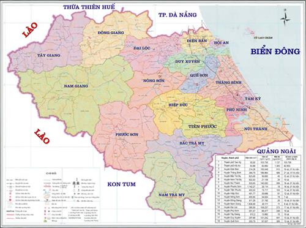

VÀI NÉT TỔNG QUAN VỀ TỈNH QUẢNG NAM
Quảng Nam là tỉnh nằm ở trung tâm của Việt Nam, thuộc Vùng kinh tế trọng điểm Miền Trung Việt Nam.
Toàn tỉnh có 2 thành phố (Tam Kỳ, Hội An), 01 thị xã (Điện Bàn) và 15 huyện (Tây Giang, Đông Giang, Nam Giang, Phước Sơn, Bắc Trà My, Nam Trà My, Hiệp Đức, Tiên Phước, Nông Sơn, Duy Xuyên, Đại Lộc, Thăng Bình, Quế Sơn, Núi Thành và Phú Ninh). Tổng diện tích tự nhiên của tỉnh là 1.057.474 ha, với dân số gần 1,5 triệu người.

Quảng Nam có địa lý vô cùng thuận lợi để kết nối các địa phương khác của Việt Nam và thế giới; có nguồn tài nguyên thiên nhiên phong phú. Là địa phương duy nhất của Việt Nam có 2 di sản văn hóa thế giới là Khu đền tháp cổ Mỹ Sơn và Đô thị cổ Hội An. Có Khu dự trữ sinh quyển thế giới Đảo Cù Lao Chàm với những vẻ đẹp hoang sơ, nhiều loại sản vật quý hiếm. Có 125 km bờ biển cát trắng, nắng vàng, nhiều bãi biển với cảnh quan đẹp nổi tiếng, được tạp chí Forbes bình chọn là một trong những bãi biển đẹp nhất hành tinh nên thuận lợi để phát triển du lịch sinh thái, nghỉ dưỡng.
Đặc biệt, Quảng Nam có khu kinh tế mở Chu Lai - khu kinh tế ven biển đầu tiên của Việt Nam, hoạt động đa ngành, đa lĩnh vực theo thông lệ quốc tế.